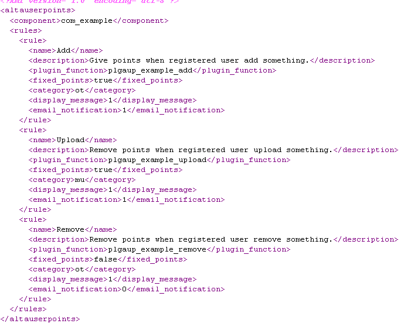

The creation of a plugin (creation of a new rule for a third component) is divided into 2 phases.
Step 1 - Inserting API in your component
This course is aimed primarily at developers or any person with a level of knowledge sufficiently advanced in PHP.
Simply insert the following API in the code component to where you want. The ideal is to follow an action that can bring items to the connected user. For example, in a component of any comments or forum, simply add the API after insertion source code of the commentary or new topic in the database.
API:
$api_AUP = JPATH_SITE.'/components/com_altauserpoints/helper.php';
if ( file_exists($api_AUP))
{
require_once ($api_AUP);
AltaUserPointsHelper::newpoints( 'function_name' );
}
function_name is the rule which will be used to award points to the current user (if registered and logged).
For all the rules included in AltaUserPoints (systems), the function names are written as follows:
example: sysplgaup_newregistered for awarding points to a new registered user.
It should keep a nomage standard for plugin-third of components as follows:
plgaup_componentname_function_name
Example plgaup_new_comment or plgaup_kunena_topic_reply to resume the example of the inclusion of this component API in a comment or Kunena forum.
The name of a function to award points when creating a new topic posted in the component Kunena could be, for example, plgaup_kunena_topic_create.
Step 2 - Add the new rule(s) in the rules manager
With AltaUserPoints version 1.9.6 and later for Joomla 3.x, all developers of third extensions for Joomla! can add directly at the root of their frontend components or plugins an unique xml file containing all the rules for a single component. The file structure is almost similar but you have to respect the ordering and tags:

Tag “component” is the name of the third component like “com_kunena” or other. As it is the same component, it is worth repeating for each rule in the tag “rule”
Administrator of the website which install a third component with this xml file can auto-detect directly from the button “auto-detect plugins” in control panel of AltaUserPoints.
This xml file has to be utf-8 encoded (required) but not be zipped! Just put this file at the root of frontend component folder or plugin or module and include this file in your installer extension . This file must be named exactly as follows: altauserpoints_rule.xml
Note to developers
You can find the complete documentation to insert and use this API in your components or plugin here.